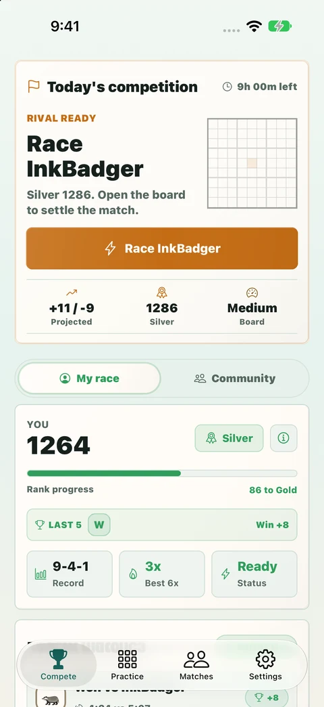
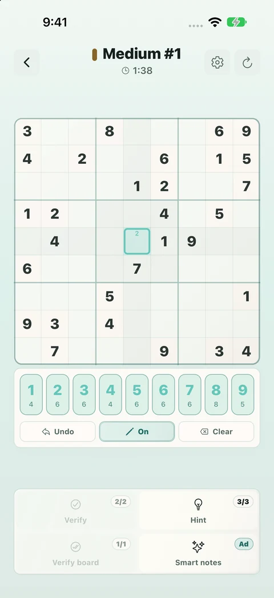

A daily race with stakes
Solve the daily board against a rival. Your result contributes to your Elo rating and competitive record.
Sudokling combines a competitive daily race with a proper place to practise. Take on the day’s Sudoku against a rival, compete for Elo and work through the ranks. When you want time to think, open a practice puzzle and solve at your own pace.

Solve the daily board against a rival. Your result contributes to your Elo rating and competitive record.
Track rating movement, rank, wins and your streak. The daily challenge gives you a reason to come back and improve.
Choose a practice puzzle, use pencil notes and take your time. Private races and archive replays offer more ways to play.
The daily race gives your solve a result: an opponent, a rating change and a record you can follow. Practice is a separate space to work through puzzles with pencil notes, without putting your daily Elo on the line.

We make the app, and we’re the people you can contact.